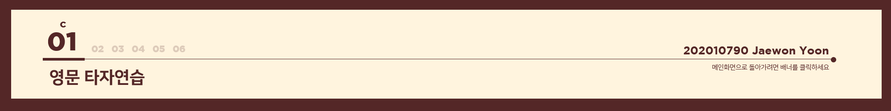

영문 타자연습
가위바위보 포인트게임
베스킨라빈스31 게임
선택정렬과 이진탐색
다항함수 적분계산기
우주 모험 게임
(1) 설명
s를 누르면 타자연습이 시작되고, 그 이외의 것이 입력되면 프로그램을 종료한다.
타자연습을 할 문제 개수를 입력한다.
배열에 저장된 단어가 임의로 출력되고, 해당 단어에 정확히 입력한 글자수 만큼 score가 증가한다. 글자를 틀리게 입력하면 오답이 출력된다.
입력한 문제 수 만큼 타자연습을 완료하면 결과창이 뜬다. 결과창에서는 정답 개수, 정답률, 걸린 시간, 타수를 확인할 수 있다.
(2) 실행결과
(3) 코드
#include <stdio.h> #include <stdlib.h> #include <time.h> #include <string.h> void question(char (*wordlists)[20], int n, int i, int *score, int *wordscore); int main(void) { int i, score, wordscore, count; float runtime; char s; srand(time(NULL)); printf("타자연습을 시작합니다.\n"); printf("시작하려면 s키를 눌러주세요: "); scanf("%c", &s); fgetc(stdin); printf("\n"); if (s == 's') { printf("연습할 문제 개수: "); scanf("%d", &count); fgetc(stdin); printf("\n"); char wordlists[][20] = {"hello", "world", "konkuk", "corona", "campus", "file", "edit", "view", "search", "project", "build", "debug", "fortran", "tools", "plugins", "settings", "help", "global", "local", "variable", "integer", "float", "double", "character", "pointer", "coding", "java", "html", "css", "python", "include", "score", "time", "void", "null", "srand", "printf", "scanf", "else", "while", "for", "switch", "gets", "puts", "define", "continue", "break", "sizeof", "signed", "unsigned"}; int n = sizeof(wordlists)/sizeof(*wordlists); score = 0; wordscore = 0; clock_t start_time = clock(); for (int i=0; i<count; i++) { question(wordlists, n, i, &score, &wordscore); } float runtime = (float)(clock() - start_time)/(CLOCKS_PER_SEC); printf("======= [타자 연습 결과] =======\n\n"); printf(" 맞은 단어수: %d개/%d개\n", wordscore, count); printf(" 정확도: %.1f%%\n", (double)(wordscore*100/count)); printf(" 총 걸린 시간: %.2f초\n", runtime); printf(" 타자수: %.1f타\n\n", score*60/runtime); printf("================================\n"); } else { printf("프로그램을 종료합니다.\n"); } return 0; } void question(char (*wordlists) [20], int n, int i, int *score, int *wordscore) { int num = (rand() % n); char *word_i = wordlists[num]; char answer[20] = {}; printf("[%d번 문제]\n", i+1); printf("단어: %s\n", word_i); printf("입력: "); gets(answer); int flag = 1; for (int j = 0; j < strlen(word_i); j++){ if (word_i[j] != answer[j]){ flag = 0; } else { *score += 1; } } if (flag) { printf("정답입니다.\n\n"); *wordscore += 1; } else { printf("오답입니다.\n\n"); } }